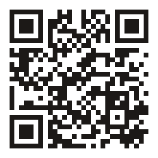

Atmosphere
FIELD CAPTURE · SETUP
Chest Mount setup card
Digital guide for the foldable MOLLE chest phone panel. Scan the QR for Field Capture docs — how crews film the shot list.

ATMOSPHERETEAM.COM/DOC-FIELD
- Weave the panel onto a vest or chest harness (MOLLE / PALS).
- Seat a phone about 4.7–6.7" in the cradle; pull the bungee across.
- Open Field Capture and walk the job’s shot list hands-free.
- Questions or returns: atmosphereteam.com/contact
Atmosphere sells and ships this accessory — we do not manufacture the panel. Fits phones ~4.7–6.7". Ships in 2–5 business days.